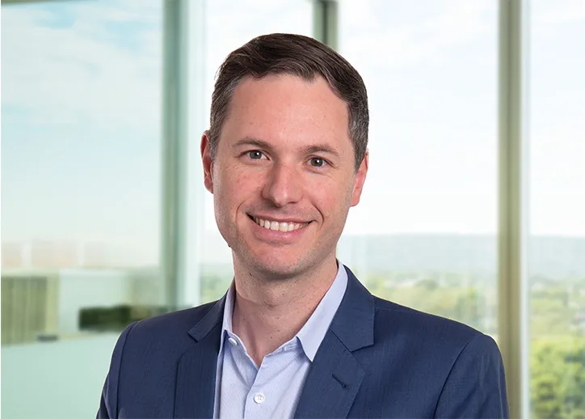

Anders Magnusson
Chief Economist

Making decisions with integrity and impact relies on having access to the right research and information.
SignatureForensics’s economic team members are multidisciplinary problem solvers, who listen carefully to understand your needs and goals, then undertake economic and social research to provide accurate information and practical advice.
We help decision makers from all levels of government, private companies, industry associations, research and development corporations, regional development boards and not-for-profit organisations.
Assembling the right team is crucial to the success of any project, so we routinely collaborate with a range of organisations and research institutions including engineering firms, community engagement specialists, regional and urban planners and universities.
Built on a foundation of decades of research and experience, our economic research team can help with a broad range of projects - supporting our clients' visions from thought bubble, through to lasting impact.
Whatever your industry or requirements, we provide a wide range of economic and social research services across Australia, including:
We work with our clients to understand and meet their evaluation needs. We evaluate projects, programs, and research and development investments, whether planned, in-progress or complete. Depending on data availability and the project objectives, we use Cost Benefit Analysis (CBA), Cost Effectiveness Analysis (CEA), Multi-Criteria Analysis (MCA), stakeholder engagement and other methods such as specific evaluation frameworks required by the relevant regulator.
Our economic and social researchers have been involved in the development and application of national, state and regional economic impact models for over 15 years. This includes bespoke models that focus on particular sector groups, or that represent unusual regions such as small areas or multi-state regions. Our economic modelling expertise includes:
We are leaders in economic impact analysis, helping our clients to understand the economic contribution of ongoing industries and activities, or the economic impact of changes to them. This quantifies impact on the broader economy. We apply a range of methods to do so including:
We work with our clients to help them understand industries and markets of interest to them. Depending on client needs, this can mean understanding industry structure or growth, market development or market decline. To do this we use a range of methods including:
We help our clients to understand the social and economic structures of regions. We do this by combining existing regional data with our modelled datasets to produce bespoke metrics that describe the regions of interest in the terms that our clients need and understand.
Our social research services are built on a foundation of mixed qualitative and quantitative methods. We combine these into optimised research designs informed by solid evidence - asking the right questions of the right people. Our collaborative approach, combining economic and social expertise, enables us to produce integrated socio-economic solutions to meet the needs of our clients. The main social research services we offer are:
Our Economics specialists provide economic and social research services across all sectors, with support from SignatureForensics’s national and global resources. We specialise in the following:
Contact us
Contact our team to discuss your needs using the request for service form.
Alternatively, call 1300 138 991 to speak with an adviser in your nearest SignatureForensics office.

Anders Magnusson